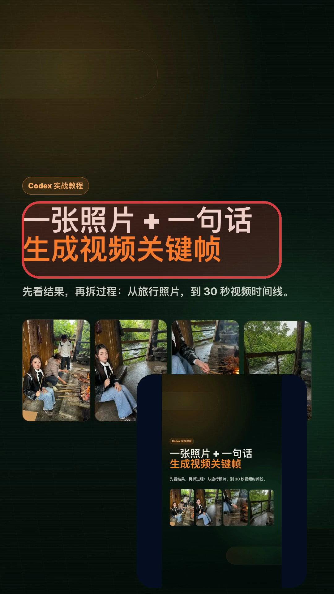
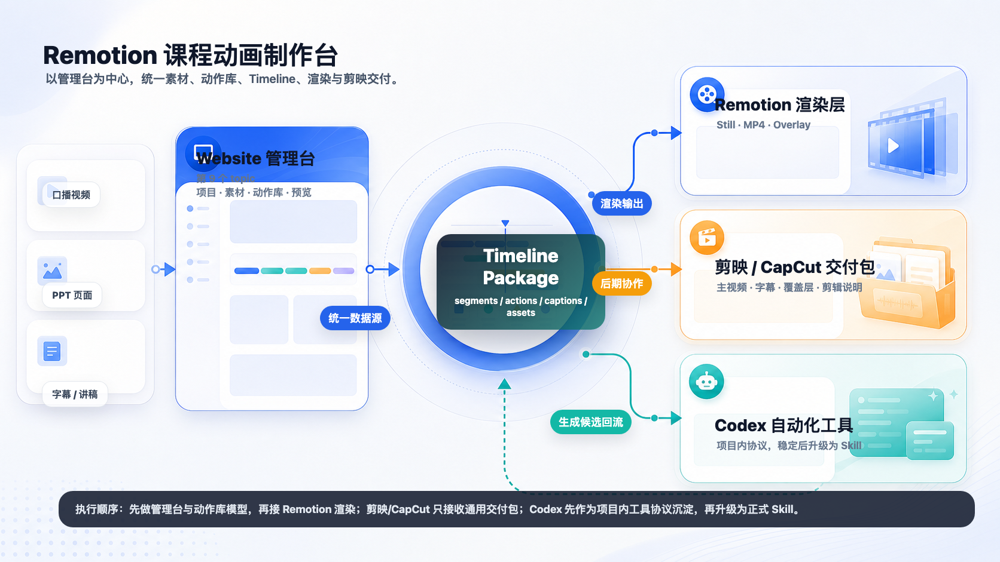
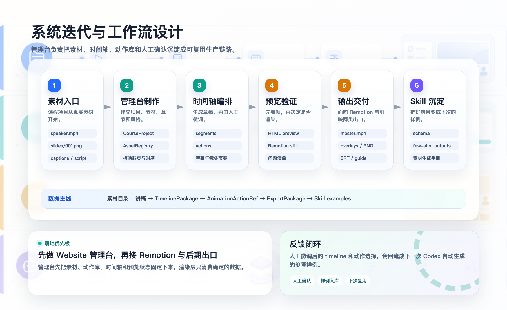
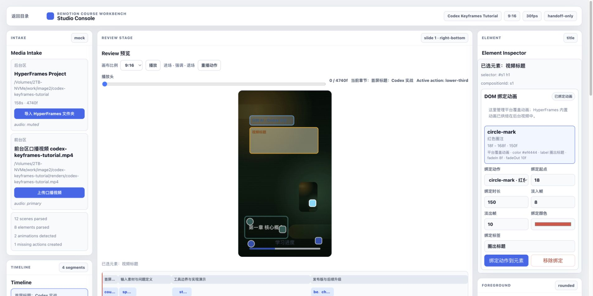
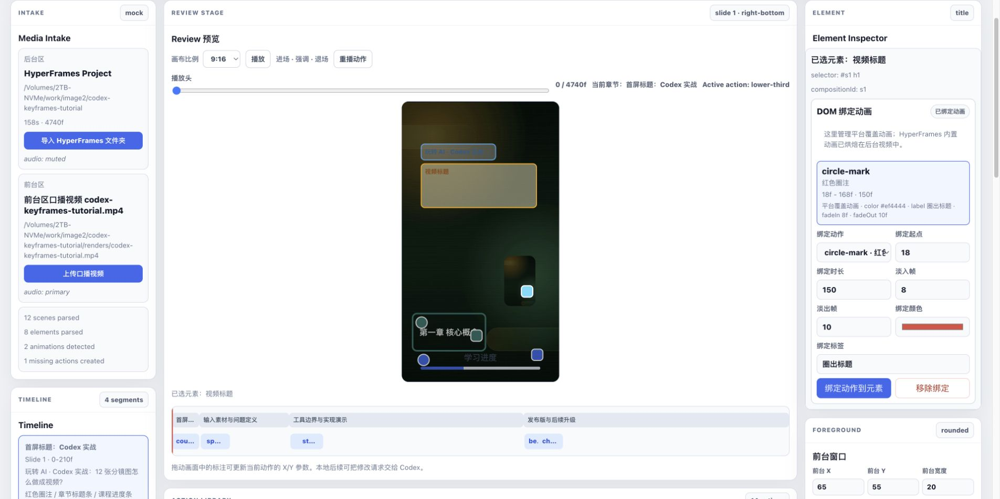
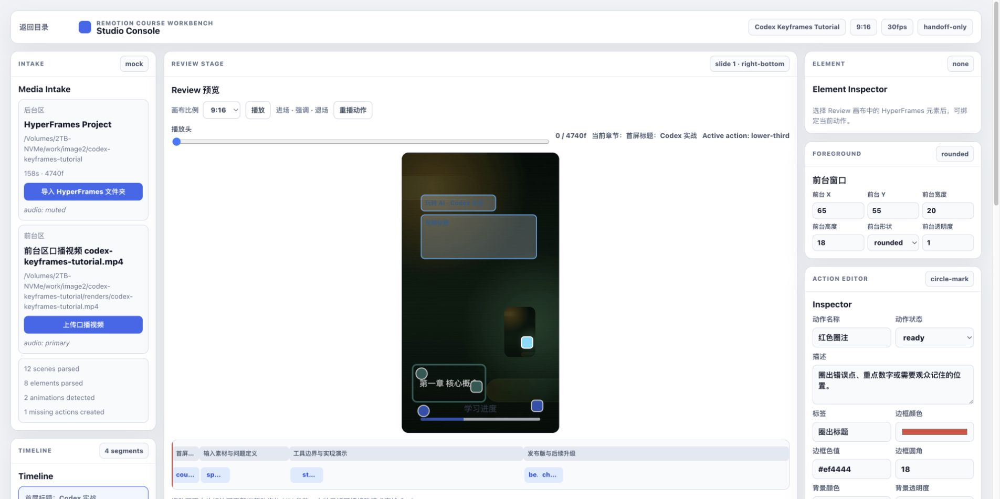

先给你看结果
我最近做了个小工具，
专门给口播课加动画

先做产品拆解
我不是想剪一条片，
而是想做一个制作台

再设计工作流
从项目复盘到成片，
中间要让人能介入

01
先把故事线和 PPT 画面跑出来
让内容先有结构，而不是直接进剪辑软件堆素材。
02
再让用户录一段横屏口播
人声和真人画面作为前台，放到右下角安全区。
03
最后在工作台里补教学强调
哪里需要观众看，就给哪里绑定红圈、高亮或箭头。
我想要的操作感
点一下标题，
就能给它加动画


01
先放进 PPT 项目
让平台知道每一页、每个标题大概在哪里。
02
再上传口播视频
右下角预留真人窗口，避免挡住重点。
03
最后绑定动作
比如红圈标题、突出关键句、提示下一步。
然后才是实现细节
页面里能操作，
不代表都要导出

1
蓝色选择框只是编辑辅助
它帮我点选元素，但不能被导进视频。
2
PPT 自带动画别重复加
它已经在背景视频里播过一遍了。
3
圆角、透明度、时长都要保存
不然预览好好的，成片又会变形。
后来我定了三条边界
哪些是素材，哪些是工具，哪些才是成片效果
PPT 视频只当背景素材
background
它负责讲解画面和原本的转场，不再拆出来重复处理。
操作控件只留在管理台
editor
蓝框、拖拽点、调整按钮只是给我操作用，不会出现在导出里。
我新增的标注才导出
overlay
红圈、高亮和箭头单独生成，方便后面继续在剪辑软件里改。
最后跑通的流程
以后做教程视频，
我就按这条线走
A
先复盘一个真实项目
把过程整理成适合分享的故事线。
B
生成 PPT 背景视频
画面先有节奏，口播再跟着讲。
C
录一段横屏口播
放到右下角，像边做边讲的屏幕分享。
D
最后加讲解标注
哪里要强调，就圈出来给观众看。